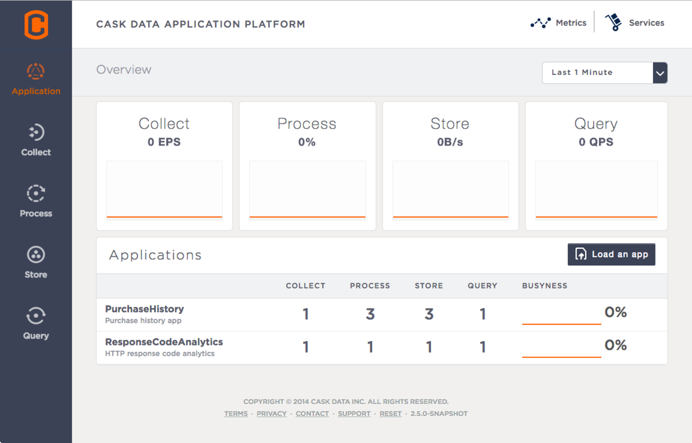

CDAP Console¶
The CDAP Console is available for deploying, querying and managing the Cask Data Application Platform in all modes of CDAP except an In-memory CDAP.
{kind=link}
Here is a screen-capture of the CDAP Console running on a Distributed CDAP.
Down the left sidebar, underneath the Cask logo, are five buttons: Application, Collect Process, Store, and Query. These buttons gives you access to CDAP Console facilities for managing each of these CDAP components.
In the far upper-right are two buttons: the Metrics and Services buttons, which take you to their respective explorers.
New User Interface¶
As part of release 2.8.0, a new alpha User Interface (UI) for the CDAP Console was introduced.
To try out the new UI, changes are required before CDAP is started.
The version of Node.js used must be in the range of v0.10.25 through v0.10.37 in order to use the New UI. (These versions will also work with the current CDAP Console, so you can use either console version.)
For CDAP Standalone SDK, pass an additional argument when starting CDAP:
$ ./bin/cdap.sh start --enable-alpha-ui
For CDAP Distributed, modify the command used to start CDAP. Before starting the service, an environmental variable needs to be set:
export ENABLE_ALPHA_UI=true for i in `ls /etc/init.d/ | grep cdap` ; do sudo service $i restart ; done
To restart just the CDAP Web App (the UI) in the new UI:
export ENABLE_ALPHA_UI=true sudo /etc/init.d/cdap-web-app restart